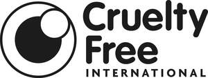

Trade Mark Journal No.2025/042 17 October 2025
UK00004276386 10 October 2025 (3,35,42,45)

- Class 3
- Non-medicated cosmetics and toiletry preparations; cosmetics and toiletries; non-medicated dentifrices; soaps; perfumery, essential oils; deodorants and anti-perspirants; air fresheners; shampoo, conditioner, and other hair cleaning and conditioning preparations; hair lotions; bleaching preparations and other substances for laundry use; cleaning, polishing, scouring and abrasive preparations.
- Class 35
- Advertising; business management, organization and administration; office functions; marketing and promotional services; organising of promotional and public awareness campaigns; retail services and wholesale services connected with cosmetics and toiletry preparations, cosmetics, toiletries, dentifrices, soaps, perfumery, essential oils, shampoo, conditioner, and other hair cleaning and conditioning preparations, hair lotions, bleaching preparations and other substances for laundry use, cleaning, polishing, scouring and abrasive preparations, DIY materials, clothing and accessories, toys, food and drink for humans and animals, vehicles, oil, fuels, pharmaceuticals, and chemicals comprising components or ingredients or being for use in the production of any of the above; advisory, consultancy and information services .
- Class 42
- Scientific and technological services and research and design relating thereto; industrial analysis, industrial research and industrial design services; quality control and authentication services; design and development of computer hardware and software; certification services; accreditation services; testing, analysis, auditing and evaluation of the goods, services and practices of others, including for certification and accreditation purposes; preparing, issuing, promoting, reviewing, maintaining, setting, and testing in respect of, standards and regulations; advisory, consultancy and information services .
- Class 45
- Licensing of intellectual property and granting of intellectual property licences; certification services; accreditation services; testing, analysis auditing and evaluation of the goods, services and practices of others for legal and regulatory compliance purposes; preparing, issuing, promoting, reviewing, maintaining, setting, and testing in respect of, standards and regulations; social and legal advisory services, and the preparation of protocols, policies and guidance in relation to animal welfare and the testing of products on animals; political lobbying and campaigning services; advisory, consultancy and information services .
Cruelty Free International
Representative: Bates Wells & Braithwaite London LLP